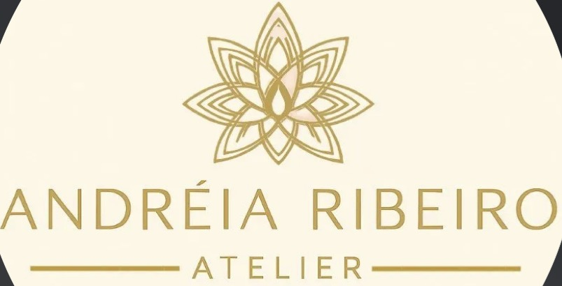
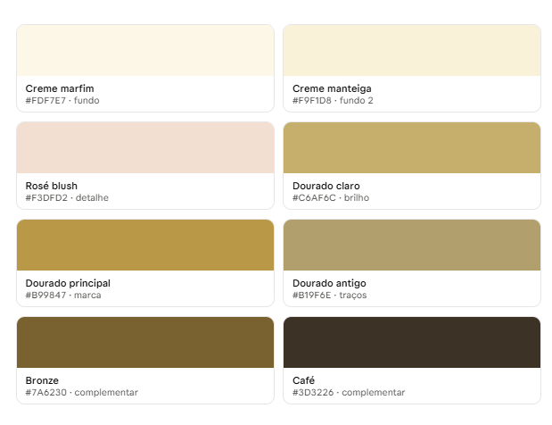

O lótus foi redesenhado em vetor a partir do logo enviado: oito pétalas pontiagudas, cada uma em três contornos, com uma chama rosé no centro. Todos os traços usam pathLength="100", então o lótus pode ser desenhado na tela.
[data-lotus] · [data-lotus="solid"]Abaixo de 32 px, use a versão sólida
Referências enviadas

assets/brand/logo-original.jpg

assets/brand/paleta.png
Cores
Fundação 02
Paleta oficial organizada por função. Ouro sobre marfim fica bom em títulos grandes e em itálico; em texto pequeno sobre fundo claro, use bronze, que tem contraste suficiente.
Tipografia
Fundação 03
Cormorant Garamond faz o papel do serifado do Soma, com o itálico dourado como assinatura. Jost, em caixa-alta espaçada, ecoa o lettering do logo. IBM Plex Mono vem do ØDE e cuida de índices, referências e metadados, como numa etiqueta de ateliê.
Display XLCormorant 300
Sob medida para uma noite.
clamp(4.2rem, 13vw, 12.5rem) .t-display-xl
Display LCormorant 300
O acervo, por ocasião.
clamp(2.9rem, 6.4vw, 6rem) .t-display-l
Display MCormorant 300
Noites que vestimos.
clamp(2rem, 3.6vw, 3.25rem) .t-display-m
Display SCormorant 400
Vestido Aurora
clamp(1.5rem, 2.2vw, 2rem) .t-display-s
Folha de ouroCormorant itálico
sua prova.
herda o tamanho .t-foil
ContornoCormorant 300
Atelier
fundo decorativo .t-outline
Body LJost 300
Vestidos de noiva, de festa e trajes de gala para locar — provados com calma e ajustados à mão no ateliê.
1.125rem / 1.75 .t-body-l
BodyJost 300
Depois de cada noite, o traje retorna ao ateliê para higienização e revisão de costuras.
1rem / 1.7 .t-body
SmallJost 300
Barra, cintura, alças e busto acertados à mão.
.875rem / 1.6 .t-small
Caixa-altaJost 400 · .32em
Ateliê sob medida
.72rem .t-caps
EtiquetaPlex Mono 400 · .22em
Ref. AR-014 · Madrinha · crepe
.68rem .t-mono
NumeralJost 200 · tabular
100%
clamp(3.2rem, 6vw, 5.5rem) .t-num
Sobretítulocaps + mono
Coleções06
.72rem + .68rem .eyebrow
Fundos
Fundação 04
O fundo principal é a seda: um shader WebGL de tecido drapeado, com dobras de cetim que refletem o ouro. É só atmosfera e nunca leva conteúdo. Os painéis de tecido em CSS marcam o lugar das fotos e usam croquis como ilustração até a fotografia real chegar.
Os ícones são do um conjunto próprio em linha, no estilo Solar Linear das referências (grade 24, traço 1.5), servido localmente por assets/icons.js. A ilustração da marca são croquis de silhueta, desenhados à linha como num caderno de moda.
Um traje sob medida não pertence a uma pessoa — pertence a uma noite.
.fill-textPalavras vão de 14% a 100% conforme a rolagem
Abertura
o lótus se desenha enquanto o contador sobe, depois a tela corta para cima
Andréia Ribeiro — Atelier
000
.loader · .loader-count
Movimento
Fundação 07
A regra é a mesma do ØDE: uma personalidade de easing para tudo. Aqui ela é um pouco mais lenta, como seda que assenta, e nada pula ou quica. Com prefers-reduced-motion, tudo aparece já no estado final.